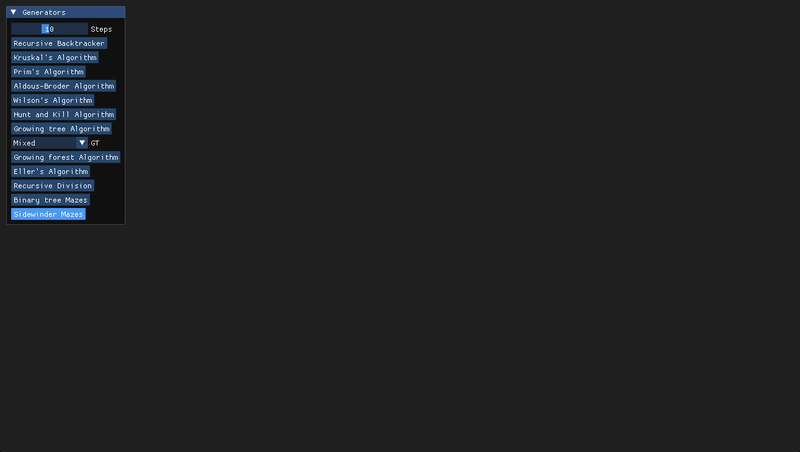

Sidewinder Algorithm
Carving a perfect maze with runs of rooms, each opening once toward the bottom corridor
Sidewinder Algorithm #
Sidewinder is Binary Tree with runs. Go through the maze row by row, and in each row build a run: a stretch of rooms joined sideways. For each room, either extend the run by knocking down the wall to the east, or close it. To close a run, pick one random room in it and open the wall below that room, then start a new run. A room at the right edge always closes its run.
The last row has nothing below it, so it never closes. It just carves east all the way and becomes one long corridor. The usual description runs the other way, with the top row as the corridor and doors opening north. It’s the same maze, mirrored. We use south to match Binary Tree.
Every run opens downward in exactly one place, and the bottom row is one connected corridor. So each row hangs off the row below it by single connections, which makes a tree and keeps the maze perfect. The chance of closing a run controls how long the horizontal stretches are.

Pseudocode #
for each row of rooms:
run = []
for each room in the row, left to right:
add room to run
at_end = room is in the last column
if this is the last row:
knock out the wall to the east, unless at_end
else if at_end or a coin flip (close_chance) says so:
pick a random room in run; knock out the wall below it
run = []
else:
knock out the wall to the eastSolution #
sidewinder :: proc(maze: ^[COLS][ROWS]Cell, close_chance: f32) {
for y: i32 = 1; y < ROWS - 1; y += 2 {
run: i32 = 1 // the first room of the current run
for x: i32 = 1; x < COLS - 1; x += 2 {
maze[x][y] = .PATH
at_end := x == COLS - 2
if y == ROWS - 2 {
// last row: one long corridor
if !at_end do maze[x + 1][y] = .PATH
} else if at_end || rand.float32() < close_chance {
// close the run: open a door below a random room in it
count := (x - run) / 2 + 1
door := run + 2 * rand.int31_max(count)
maze[door][y + 1] = .PATH
run = x + 2
} else {
maze[x + 1][y] = .PATH
}
}
}
}
generate :: proc(maze: ^[COLS][ROWS]Cell) {
sidewinder(maze, 0.5)
}Run it, press space a few times.
odin run .